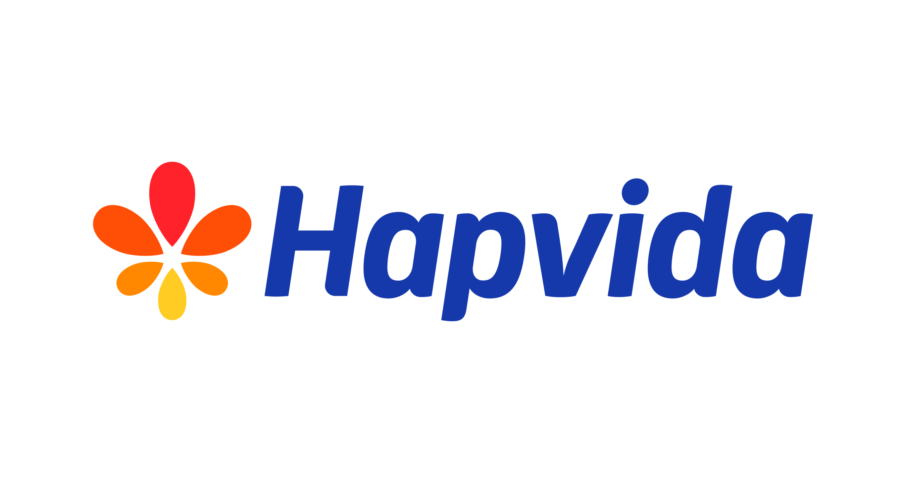
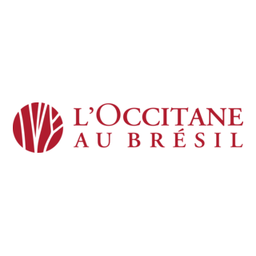
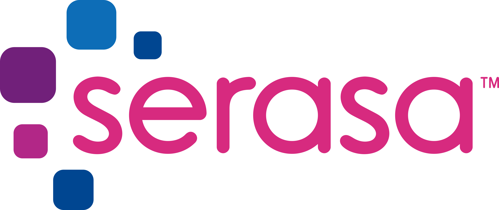

Veja as vagas disponíveis
Empresa: Mercado Livre
Vaga: Auxiliar Logístico
Local: Cajamar - SP

A vaga de Auxiliar de Logística é destinada para atuação no centro de distribuição. O profissional será responsável pelo recebimento, separação, conferência e organização de mercadorias, garantindo que todo o processo logístico ocorra com qualidade e eficiência.
Empresa: Amazon Brasil
Vaga: Representante de Envios
Local: Jordanésia - SP

Faça parte da equipe da Amazon Brasil atuando na área de logística. O profissional será responsável pela separação de pedidos, conferência, embalagem e organização dos produtos, contribuindo para que as entregas sejam realizadas com rapidez e qualidade.
Empresa: Hapvida NotreDame
Vaga: Recepcionista de Laboratório
Local: São Paulo - SP

Buscamos profissionais comunicativos para atuar no atendimento aos pacientes, organização de documentos, direcionamento para exames e suporte às atividades administrativas da unidade, garantindo um atendimento humanizado.
Empresa: Unimed
Vaga: Auxiliar de Enfermagem
Local: Jundiaí - SP
A Unimed busca profissionais comprometidos para prestar apoio à equipe de enfermagem, realizar atendimento aos pacientes, auxiliar em procedimentos e contribuir para um ambiente acolhedor e seguro.
Empresa: L'occitane Au Brésil
Vaga: Atendente de Perfumaria
Local: São Paulo - SP

Atender clientes, apresentar produtos, organizar o ambiente de vendas e auxiliar na reposição de mercadorias, proporcionando uma excelente experiência de compra para todos os consumidores.
Empresa: Serasa Experian
Vaga: Analista de Prevenção à Fraude
Local: São Paulo - SP

Faça parte da equipe responsável por identificar comportamentos suspeitos, analisar informações e contribuir para a prevenção de fraudes, garantindo mais segurança para clientes e empresas.